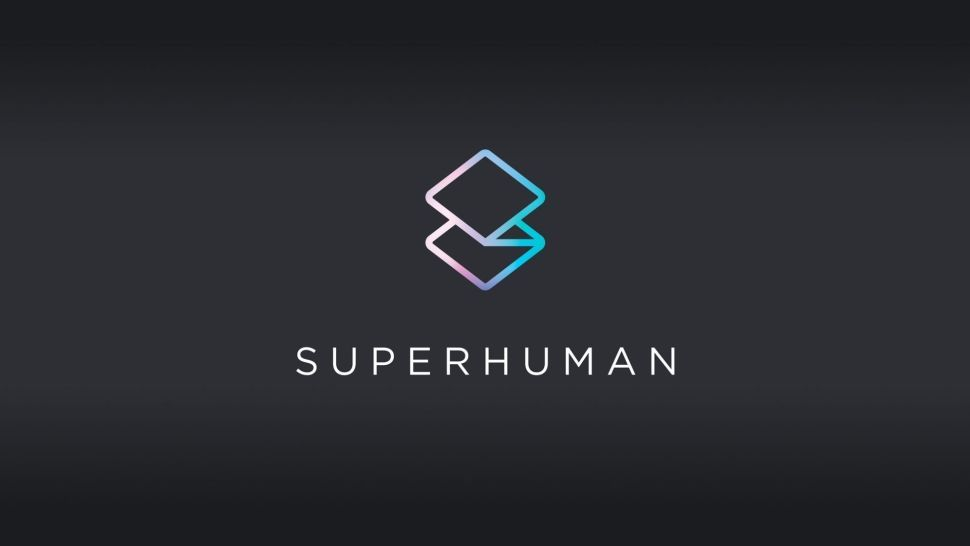

Our Opportunity
What This Means for SimplaDocs
The opportunity surface has expanded dramatically. But access is gated and uncertainty runs high.

The Upside
- Massive distribution — Pack development skills now build agents reaching 40M+ users across 1M+ apps via Grammarly's extension
- Same SDK, bigger surface — Pack skills translate directly to agent skills. Our existing expertise is the foundation.
- Agent Store monetization — A new marketplace and distribution channel for our work
- Superhuman Alliance — Partner program targeting VARs and solution providers like us
The Risks
- Gated access — Agents SDK is closed beta. We can't build for the broader platform until we get in.
- Center of gravity shifting — The agentic future lives in Go, not in Coda docs. Our Coda-native expertise is valuable but the action is moving elsewhere.
- Strategic drift potential — Core Coda features could be deprioritized in favor of the agent platform
- Platform dependency — We're building on someone else's platform during a period of rapid change
Specific opportunities for SimplaDocs
- Convert existing Packs into agents for the Agent Store — our Pack portfolio is a head start
- Offer Superhuman Suite implementation services — enterprises need help with the transition
- Build expertise in multi-agent architecture — Go's connector + partner agent model is complex enough that clients will need guidance
- Position as early movers if we secure SDK access — first-mover advantage in the Agent Store
- Rows migration consulting — teams on Rows.com (sunsetting May 31) need help moving to Coda